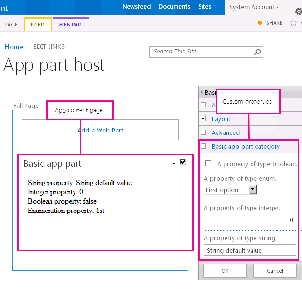
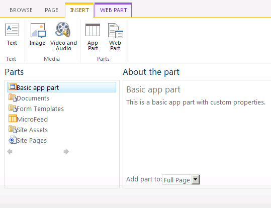

This sample developer-hosted app demonstrates how to add an app part to your app for SharePoint that users can add to their Web Parts pages. After the app is deployed, the app part is added to the Web Part gallery in the host web. When end users add the
Web Part to their Web Parts pages, the property values are passed to the remote webpage through the query string. The remote webpage customizes the rendering process based on the property values.
Description of the sample
The markup that declares the app part is in the AppPart\Elements.xml file in the AppPartsApp project. The rendering logic is in the AppPartContent.html webpage in the AppPartsWeb project. Figure 1 shows the Web Parts page with a Basic app part.
Figure 1. Basic app part in a Web Parts page
Prerequisites
This sample requires the following:
-
Microsoft Visual Studio 2012
-
SharePoint development tools in Visual Studio 2012
-
A SharePoint 2013 development environment (app isolation required for on-premises scenarios)
Key components of the sample
The sample contains the following:
-
AppPartsApp project, which contains the AppManifest.xml file
-
AppPartsWeb project
-
AppPartContent.html file, which contains the rendering logic
-
Web.config file
-
Configure the sample
Follow these steps to configure the sample.
-
Update the SiteUrl property of the solution with the URL of the home page of your SharePoint website.
Run and test the sample
-
Press F5 to build and deploy the app.
-
Choose Trust It on the consent page to grant permissions to the app.You should see a SharePoint page with additional instructions.
-
Go to any wiki page or Web Parts page in the host web.
-
Edit the page and add the Basic app part from the Web Part gallery. Figure 2 shows the Basic app part in the Web Part gallery.Figure 2. Basic app part in the Web Part gallery

Troubleshooting
The following table lists common configuration and environment errors that prevent the sample from running or deploying properly and how to solve them.
|
Problem
|
Solution
|
|---|---|
|
Visual Studio does not open the browser after you press the F5 key.
|
Set the app for SharePoint project as the startup project.
|
|
The app part does not display any content. The app part displays the following error:
Navigation to the webpage was canceled.
|
The browser blocked the content page. The solution might be different depending on the browser you are using:
|
Change log
|
Version
|
Date
|
|---|---|
|
First version
|
July 16, 2012
|